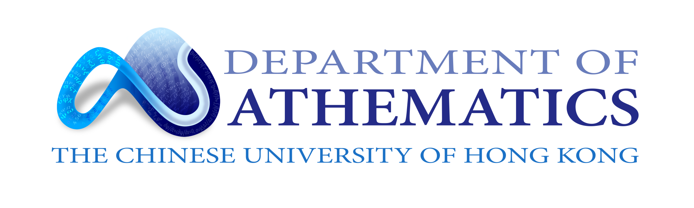
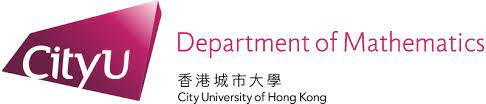

Welcome
The East Asia Section of Inverse Problems International Association (IPIA) was initiated by Professor Gunther Uhlmann (University of Washington and Hong Kong University of Science and Technology) and Professor Jun Zou (The Chinese University of Hong Kong) during a conference on Inverse Problems, Imaging and PDEs that was held in Hong Kong University of Science and Technology, September 28–October 2, 2015. This conference was also regarded as the first annual meeting of the East Asia Section of IPIA.
The East Asia Section of IPIA was officially established in October 2015. The Section aims to provide an active exchange platform for researchers working on inverse problems in the East Asia region, especially for young scholars. After some consultations and discussions among active researchers in this region, the first executive committee of The Section was formed by Professor Jun Zou (President, The Chinese University of Hong Kong), Professor Jenn-Nan Wang (Vice President, National Taiwan University), Professor Bo Zhang (Vice President, Chinese Academy of Sciences) and Professor Hongyu Liu (Secretary, City University of Hong Kong). Professor Gunther Uhlmann is the honorary president of The Section.
Executive Committee
Executive Committee (2024–now)
| Honorary President | Jun Zou (The Chinese University of Hong Kong) |
|---|---|
| President | Bangti Jin (The Chinese University of Hong Kong) |
| Vice President |
Mikyoung Lim (Korea Advanced Institute of Science and Technology) Yi-Kan Liu (Kyoto University) Xiaodong Liu (Chinese Academy of Sciences) |
| Secretary | Yi-Hsuan Lin (National Yang Ming Chiao Tung University) |
| Members | Youjun Deng (Central South University) |
| Sanghyeon Yu (Korea University) | |
| Hai Zhang (Hong Kong University of Science and Technology) |
Executive Committee (2015–2023)
| President | Jun Zou (The Chinese University of Hong Kong) |
|---|---|
| Vice President | Jenn-Nan Wang (National Taiwan University) Bo Zhang (Chinese Academy of Sciences) |
| Secretary | Hongyu Liu (City University of Hong Kong) |
| Honorary President | Gunther Uhlmann (University of Washington and Hong Kong University of Science and Technology) |
Inverse Problems Seminar


The Inverse Problems Seminar series aims to encourage interaction between researchers in inverse problems, imaging, partial differential equations (PDEs) and other applied areas. It is jointly organized between HKUST Jockey Club Institute for Advanced Study, Department of Mathematics, Hong Kong University of Science and Technology, Department of Mathematics, The Chinese University of Hong Kong, and Department of Mathematics, City University of Hong Kong.
Schedule
| Time (HKT | +8 GMT) | Seminar |
|---|---|
| February 15, 2023 (Wed) 15:00 – 16:00 |
Inverse Problems for Graphs and Discrete Spaces Speaker: Prof. Matti LASSAS (University of Helsinki) Venue: Online via Zoom |
| February 22, 2023 (Wed) 15:00 – 16:00 |
Nonlinear Ill-Posed Inverse Problem in Low-Dose Computed Tomography Speaker: Jin Keun SEO (Yonsei University) Venue: Online via Zoom |
| March 1, 2023 (Wed) 16:00 – 17:00 |
The Calderón Problem for Quasilinear Conductivities Speaker: Prof. Yavar KIAN (Aix-Marseille University) Venue: Online via Zoom |
Young Scholar Symposium
The symposium is organized once or twice each year. Each symposium is approximately for two days.
Since its establishment, The East Asia Section of IPIA has organized a series of activities in a continuous manner, including the annual workshops "East Asia Section of IPIA – Young Scholar Symposium". This series of symposia aims to promote young scholars working on inverse problems in the East Asia region. The symposia also provide a platform for active young researchers to exchange ideas and research results with their peers as well as leading experts from the East Asia region and to explore opportunities for research collaborations. The East Asia Section of IPIA will select and award one distinguished young researcher for "East Asia Junior Scholar Award" at each "East Asia Section of IPIA – Young Scholar Symposium". This award started from 2017 and three awards were issued in 2017, 2018 and 2019, respectively.
You may find more details in the detailed guideline of East Asia Section of IPIA – Young Scholar Symposium.
"East Asia Section of IPIA – Young Scholar Symposium" was held once every year since the establishment of the East Asia Section in 2015 until the outbreak of the COVID-19 pandemic at the end of 2019.
-
The First Young Scholar SymposiumHosted by Hong Kong University of Science and Technology, Hong Kong SAR, 2015
-
The Second Young Scholar SymposiumHosted by South University of Science and Technology, Shenzhen, 2016
-
The Third Young Scholar SymposiumHosted by National Taiwan University, Taiwan, 2016View details »
-
The Fourth Young Scholar SymposiumHosted by Hong Kong Baptist University, Hong Kong SAR, 2018View details »
-
The Fifth Young Scholar SymposiumHosted by Chinese Academy of Sciences, Beijing, 2019View details »
-
The Sixth Young Scholar SymposiumHosted by The Chinese University of Hong Kong, Hong Kong, March 2023View details »
-
The Eighth Young Scholar SymposiumHosted by Central South University, Changsha, November 2024View details »
-
The Ninth Young Scholar SymposiumHosted by Kyoto University, Kyoto, November 2025View details »
-
The Tenth Young Scholar SymposiumHosted by National Taiwan University, Taipei, April 2026View details »
Membership
All PhD students, post-docs, assistant professors, newly promoted associate professors can join the East Asia Section of IPIA as active members.
Organizing Committee
The organizing committee of East Asia Section of IPIA – Young Scholar Symposium consists of 5 to 6 members. The local organizer serves as the chair of the committee. The members of the organizing committee will nominate the speakers of the symposium. Each member may nominate 3 to 4 speakers from his/her region, respectively.
East Asia Junior Scholar Award
In each symposium of the East Asia Section of IPIA, one "East Asia Junior Scholar Award" will be selected. The members of the organizing committee of the Symposium are the judges of the award.
The guideline of the award is as follows:
- The quality of the results (40%)
- The clearness of the presentation (50%)
- Answering questions (10%)
The winner will receive a certificate and a gift (prepared by the local organizer).
The Winners
Support
All committee members and speakers will receive local supports.
Other Associations
-
Inverse Problems International Association (IPIA)http://www.ipia.site
-
Finnish Inverse Problems Society (FIPS)https://www.fips.fi
-
German Speaking Inverse Problems Society (GIP)https://inverseprobleme.de/?page_id=75&lang=en
-
Eurasian Association on Inverse Problems (EAIP)https://www.eurasianip.org